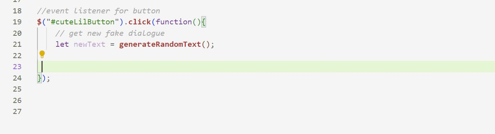
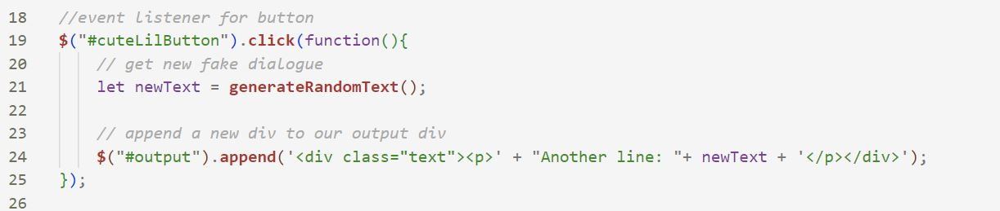

⭑✫ Lab 14: Debugging Strategies ✫⭑
♡ Challenge ♡
Work with a partner to debug old labs
♡ Problems ♡
The biggest problem I had was finding code to debug. Luckily I found that on lab 10 my function was not working so I was able to fix it by putting a new div for my output div in my event listener button.
♡ Results ♡
Look at my screenshots to see how I fixed my problem!
♡ Debugging ♡
Before: in the event listener I did not create a place for my output div to be showcased

After: this showcases my code after! Using jQuery I called my output div to implement my function into the lab assignment.
